Contextualização e escopo
O objeto é a priorização da atenção à infraestrutura rodoviária estadual no PLI-SP. O predomínio da rede não é vício de método: é o modal sob questionamento. A superfície territorial usa o município, 645 municípios. A superfície de rede usa o subtrecho do painel DER, 6.922 subtrechos. Não há desagregação por setor censitário.
O que se mede é necessidade e pressão observadas, não o benefício esperado de um projeto. Ausência de observação não vira zero. O atraso TomTom entra na média do subtrecho porque a cobertura da extensão chegou a 95,3%. É um instantâneo de 11:10–11:12 de 5 de outubro de 2026, não um perfil típico. InfoSiga não entra: o microdado não está acessível aqui e não foi substituído por estimativa.
Esta página é saída de modelo em documentacao/saidas_modelos/grok_4_7. Não altera a nota técnica homologada nem os pesos do sistema em produção.
Objetivos
- Separar pressão operacional da malha estadual, no subtrecho DER, e necessidade territorial, no município, sem fundi-las numa média.
- Manter um fator latente por critério da média, com variável, equação, cobertura e fonte rastreáveis.
- Produzir as duas superfícies por média simples, deixando o AHP como intervenção posterior de pesos.
Matriz de critérios e premissas
| Dimensão | Critério | Premissa | Métrica | Unidade | Relação | Fonte | Na média |
|---|---|---|---|---|---|---|---|
| Técnica | Pressão de demanda da malha estadual | Município cuja malha estadual observada carrega maior volume diário concentra maior pressão de uso rodoviário. Não mede benefício de um projeto. | Média de VDM ponderada pela extensão intersectada | veículos/dia | ↑ | DER-SP, painel de capacidade rodoviária (cap_rodo_painel) | Mapeada; fora da média por colinearidade com V/C |
| Técnica | Saturação da malha estadual | Volume alto com capacidade folgada não equivale a saturação. A relação V/C acrescenta a capacidade que o VDM não contém. | Média de V/C ponderada pela extensão, com cobertura ≥ 95% da extensão municipal | adimensional | ↑ | DER-SP, painel de capacidade rodoviária | Sim |
| Técnica | Restrição geométrica da malha | Relevo ondulado ou montanhoso restringe a geometria operacional da rodovia. A velocidade livre é parâmetro do mesmo modelo de capacidade, não uma velocidade observada; permanece mapeada e fora da média. | Média ponderada de 0, 0,5 e 1 | índice 0–1 | ↑ | DER-SP, painel de capacidade rodoviária | Sim |
| Territorial | Conflito urbano-rodoviário | Trecho estadual em entorno urbano ou periurbano concentra travessia, acesso local e conflito de passagem. | Fração da extensão em entorno urbano ou periurbano | fração | ↑ | DER-SP, painel de capacidade rodoviária | Sim |
| Social | Pressão demográfica | A densidade mede intensidade de demanda local. A população absoluta apenas reproduz o tamanho do município e não entra na média. | População / área | hab./km² | ↑ | IBGE, Censo 2022, tabela 4714; malha municipal do repositório | Sim |
| Econômica | Dependência intermunicipal de trabalho | Quem trabalha em outro município depende de deslocamento, em grande parte rodoviário. É o indicador de mobilidade que a matriz original não tinha. | Percentual oficial de ocupados | % | ↑ | IBGE, Censo 2022, amostra, campo V16000065 | Sim |
| Vulnerabilidade | Déficit de esgotamento sanitário | Esgotamento rudimentar, lançamento em corpo hídrico, outra forma ou ausência de banheiro medem déficit de acesso atual. Não substitui renda nem PIB. | Soma dos percentuais oficiais das quatro categorias inadequadas | % | ↑ | IBGE, Censo 2022, universo, campos V04000094, V04000095, V04000096 e V04000098 | Sim |
| Logística | Afastamento do modo alternativo mais próximo | Quanto mais distante o porto, o aeroporto público, a ferrovia ou a hidrovia, maior a dependência prática da rodovia. Quatro distâncias separadas repetiriam o mesmo fator. | Mínimo das distâncias ao ponto representativo do município | km | ↑ | ANTAQ; ANAC 2021; malha ferroviária do bloco B; instalações da hidrovia Tietê | Sim |
A planilha completa, com operador e dado, está em Matriz_Criterios_Premissas_municipal_retificada.xlsx.
Variáveis espacializadas
Cada mapa é a variável bruta no município. Cinza: sem malha estadual suficiente ou atributo com cobertura inferior a 95% da extensão intersectada. Extensão mínima: 1 km.
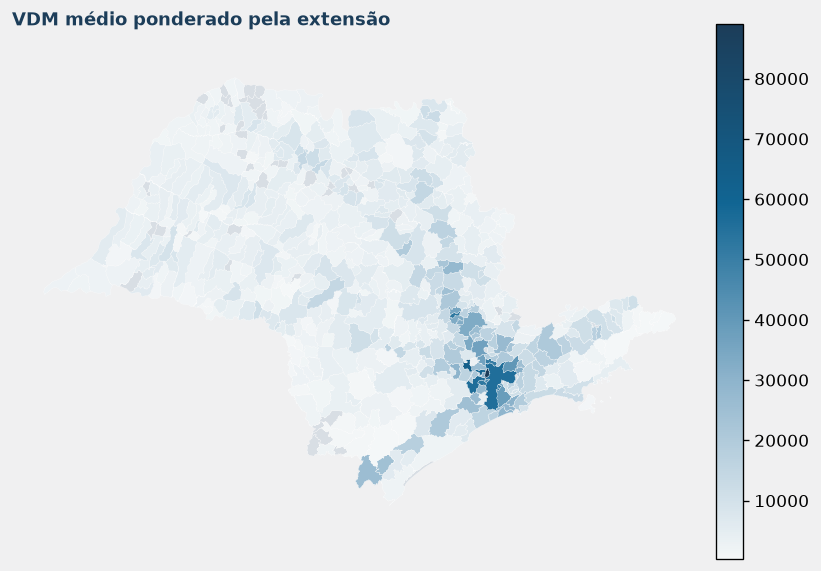
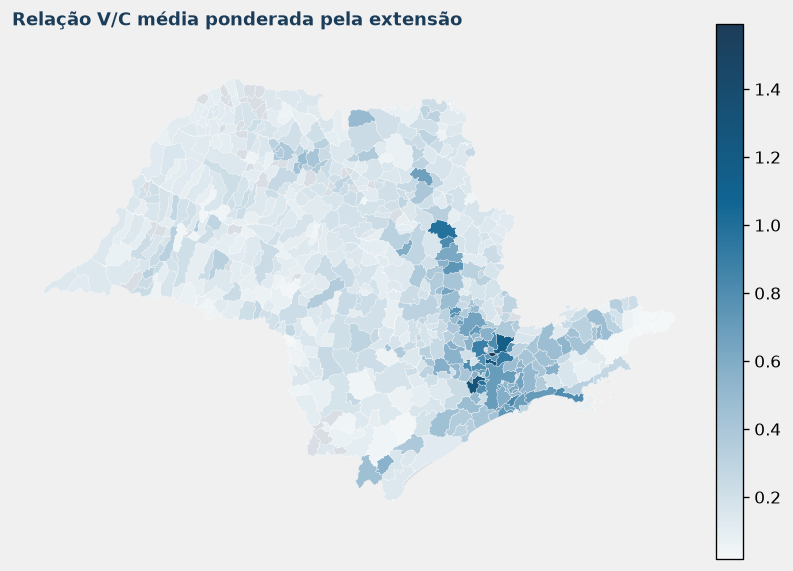
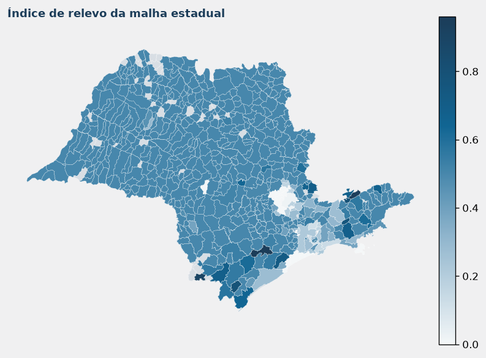
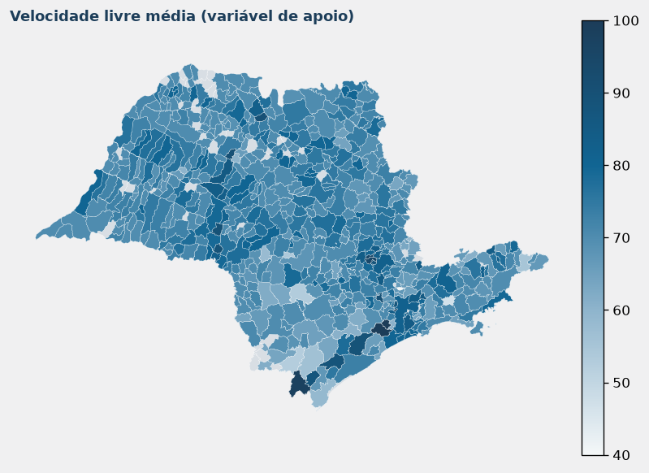
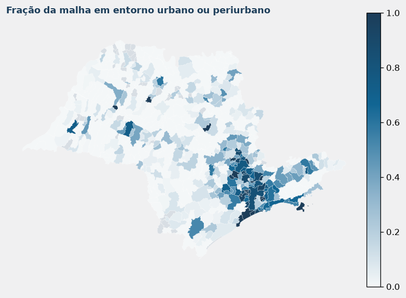
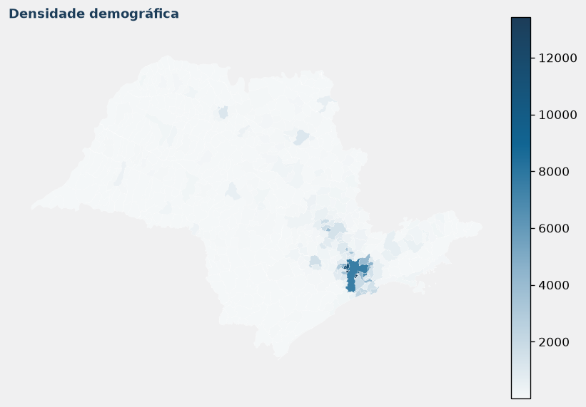
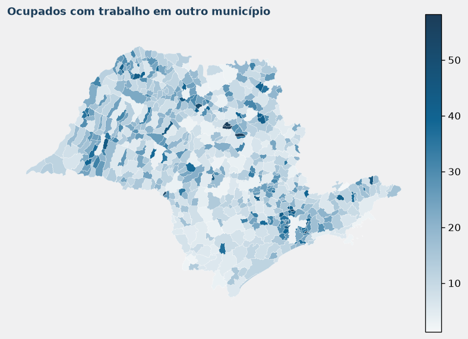
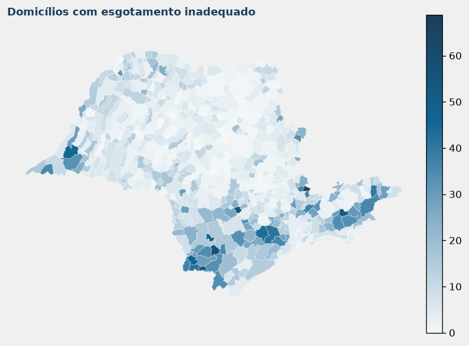
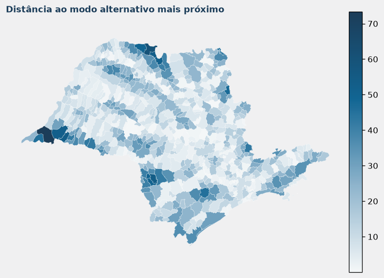
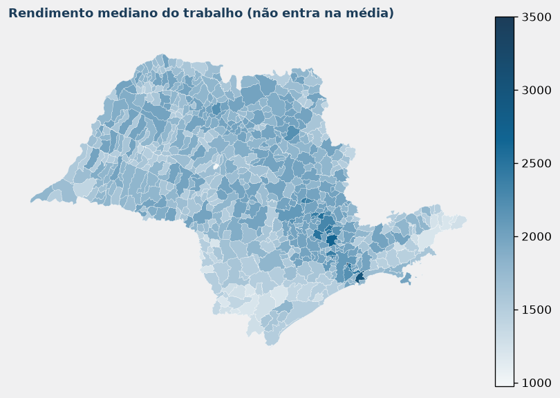
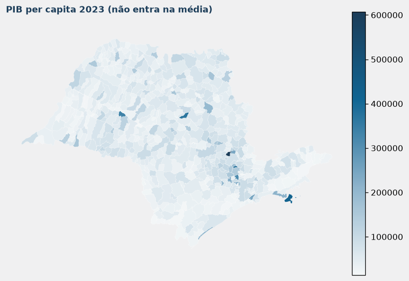
Premissa, critério e espacialização
Rede — agregação comum
x̄ₘ = Σᵢ (xᵢ · Lᵢ) / Σᵢ Lᵢ válido se Σ Lᵢ ≥ 1.000 m e a extensão com x observado / Σ Lᵢ ≥ 0,95
Lᵢ é o comprimento do pedaço de subtrecho dentro do município, em SIRGAS 2000 / Brazil Polyconic. A interseção evita o atributo nm_mun do painel, que não coincide com o município da geometria.
R1 — demanda
Premissa: maior VDM, maior pressão de uso. Equação: x = vol_inter. Este critério sai da média e permanece apenas como variável, porque a correlação atingiu o limiar. Spearman VDM × V/C = 0,915.
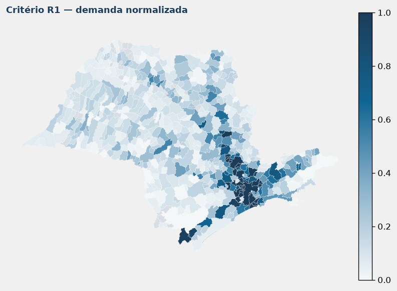
R2 — saturação
R2ₘ = Σᵢ (V/Cᵢ · Lᵢ) / Σᵢ Lᵢ
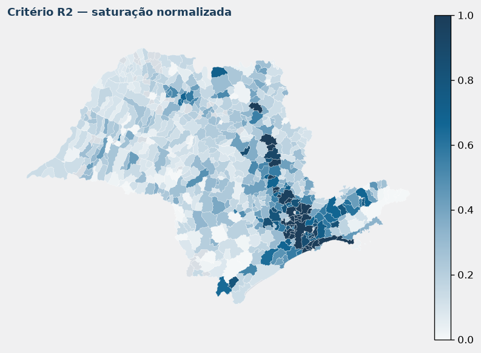
R3 — geometria
s(plana)=0; s(ondulada)=0,5; s(montanhosa)=1 R3ₘ = Σᵢ (sᵢ · Lᵢ) / Σᵢ Lᵢ
Spearman relevo × velocidade livre = -0,269. A correlação municipal não atinge o limiar de redundância. Ainda assim a velocidade livre fica fora da média: no painel ela é parâmetro do modelo de capacidade, não uma velocidade observada independente. Contá-la de novo somaria o modelo a si mesmo.
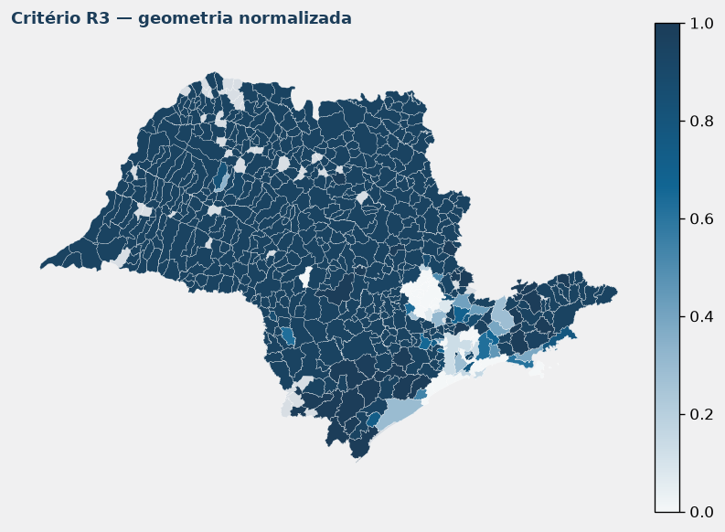
R4 — conflito urbano
R4ₘ = Σᵢ (1[entorno urbano ou periurbano] · Lᵢ) / Σᵢ Lᵢ
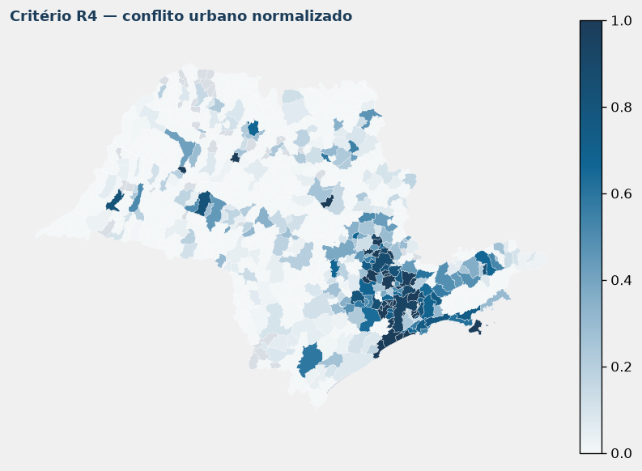
T1 — densidade
T1ₘ = população residente₂₀₂₂ / áreaₘ
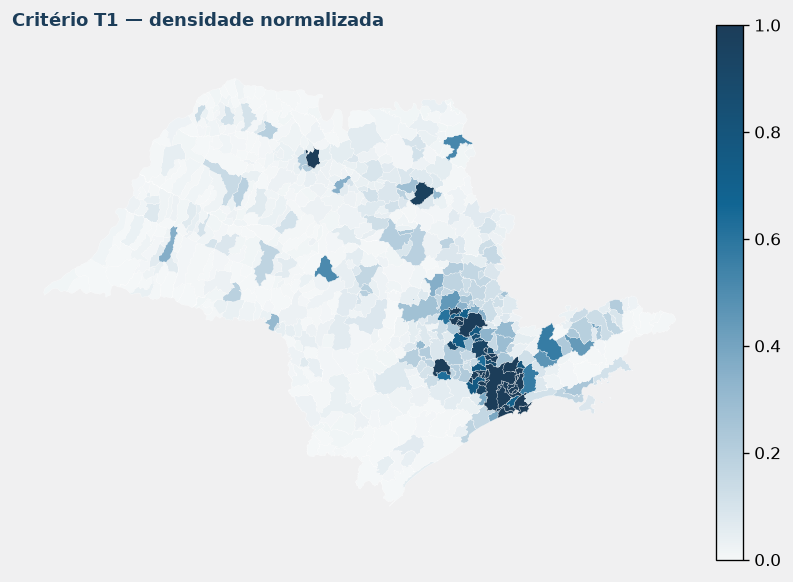
T2 — dependência de trabalho
T2ₘ = V16000065ₘ
Percentual oficial, sexo total, classe de rendimento total, retorno semanal total. É estimativa de amostra, não contagem de universo.
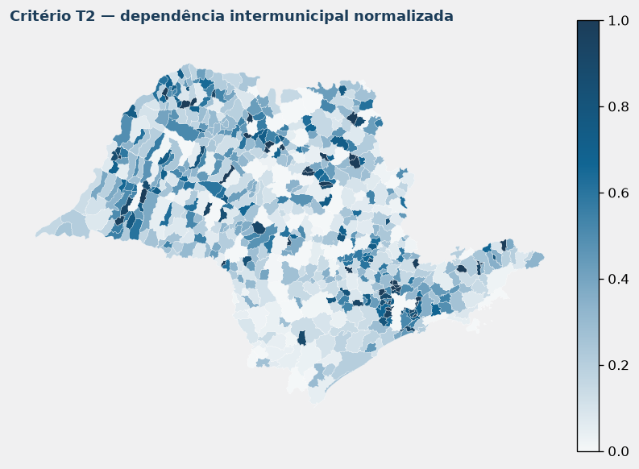
T3 — esgotamento inadequado
T3ₘ = fossa rudimentar + corpo hídrico + outra forma + sem banheiro
Percentuais oficiais do universo, categorias exclusivas. A categoria IBGE “rede geral, rede pluvial ou fossa ligada à rede” mistura galeria pluvial com rede sanitária; por isso o déficit usa as categorias inadequadas, não o complemento daquela categoria. Spearman com renda mediana = -0,459. A renda não entra na média.
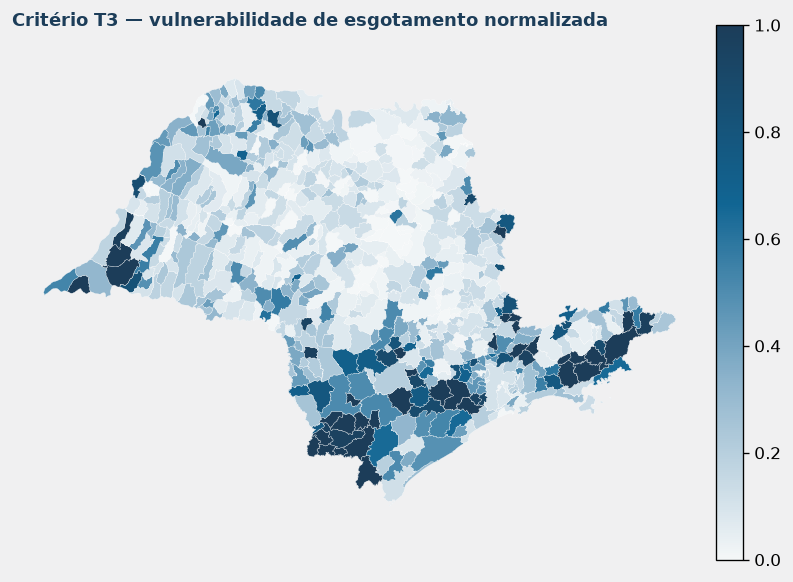
T4 — afastamento modal
T4ₘ = min(d_porto, d_aeroporto público, d_ferrovia, d_hidrovia) / 1.000
Portos ativos em SP: 37. Aeroportos públicos ANAC 2021: 72. Trechos ferroviários: 1865. Instalações da hidrovia: 48. Aeródromo privado não é polo logístico e foi excluído.
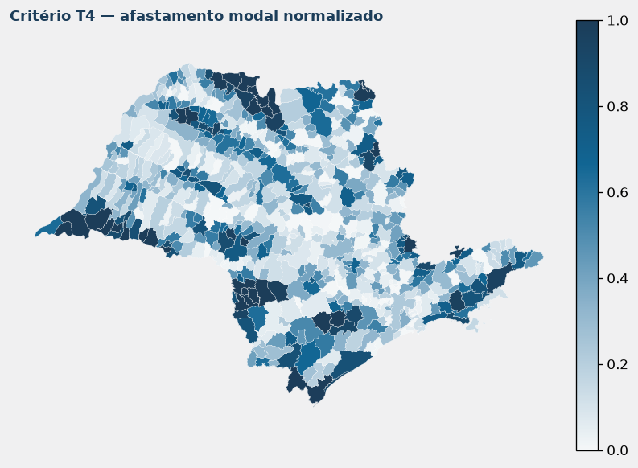
Rede por trecho do DER
A superfície de rede é o subtrecho do painel de capacidade, não o município. São 6922 subtrechos e 18601 km. O município continua sendo a unidade só da superfície territorial. Sem casamento não se atribui zero.
O TomTom é o tile vetorial de fluxo relativo, zoom 11, linha mais próxima até 100 m, classes viárias compatíveis com rodovia. O raio cobre a generalização do tile e a divergência entre o eixo do DER e o eixo TomTom. A 60 m a extensão coberta era 93,1%; a 100 m, o ganho ainda é conflação; acima disso o acréscimo praticamente para. O traffic_level publicado é a razão entre a velocidade corrente e a livre: 1 é fluxo livre. A pressão usada é o complemento, 1 − traffic_level. A coleta é o instante 2026-10-05 11:10–11:12 BRT, não um perfil típico. Fechamento de via, quando a tag existe, entra como atraso 1.
amostrasᵢ = pontos a cada 50 m, incluindo as extremidades cobertoᵢ = amostras a ≤ 100 m de linha TomTom válida / amostrasᵢ atrasoᵢ = média dos níveis das amostras casadas, só se cobertoᵢ ≥ 0,95 cobertura da malha = Σ Lᵢ com atraso observado / Σ Lᵢ
Cobertura da extensão: 95,3%. Subtrechos observados: 6722 de 6922. O atraso entra na média do trecho. Spearman VDM × V/C no subtrecho = 0,895. VDM não entra na média. No instante da coleta a massa da malha está em fluxo livre. O p5–p95 comprime essa massa em zero e leva a cauda de atraso a 1: o critério separa trecho livre de trecho com atraso mensurável, e não ordena a intensidade dentro da cauda.
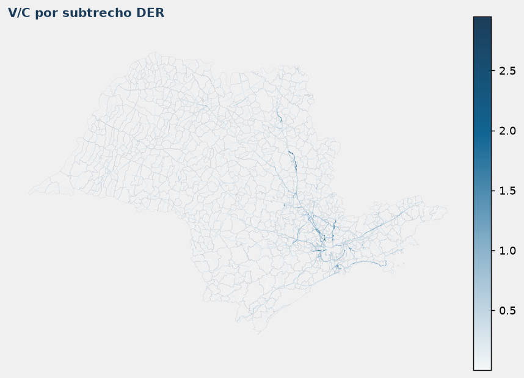
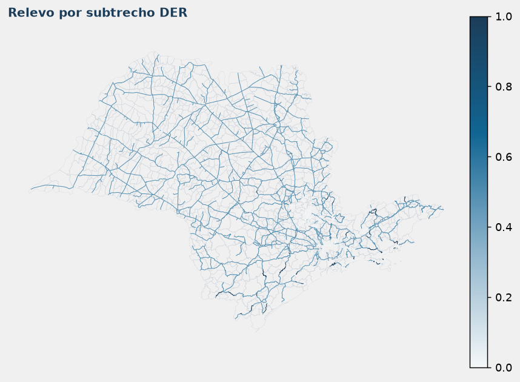
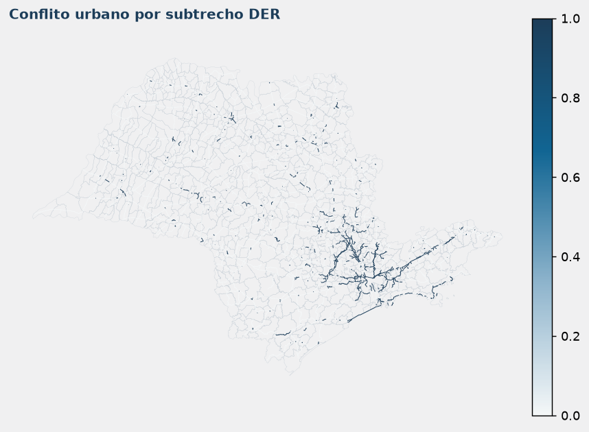
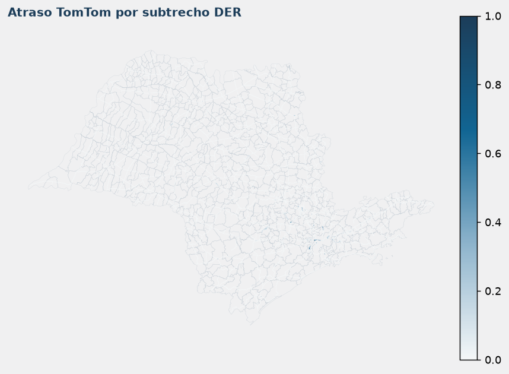
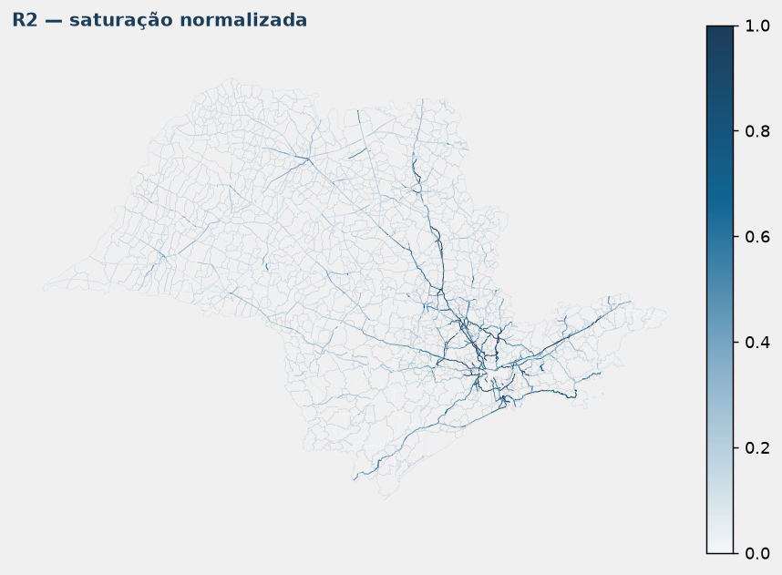
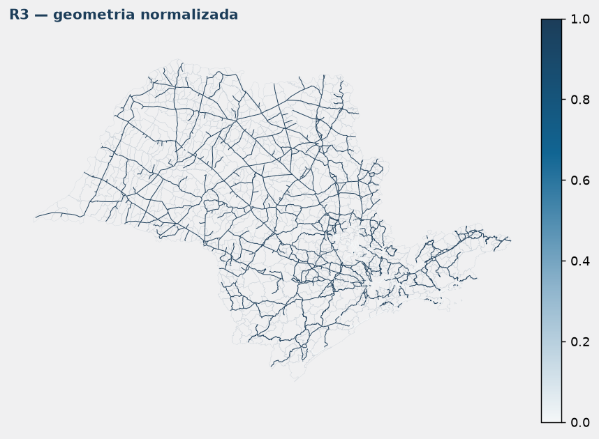
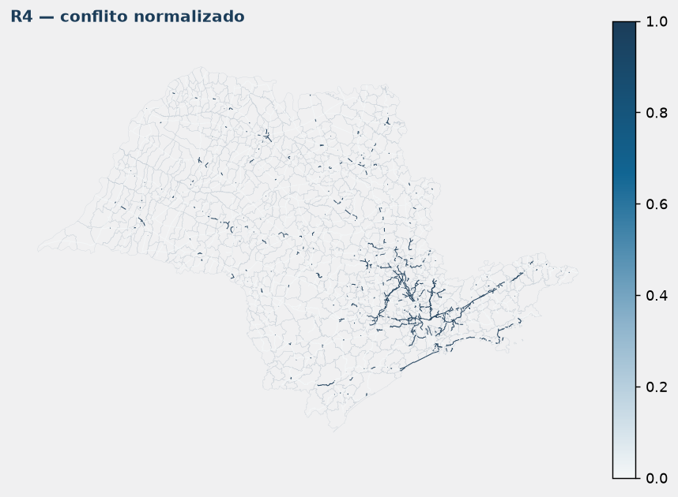
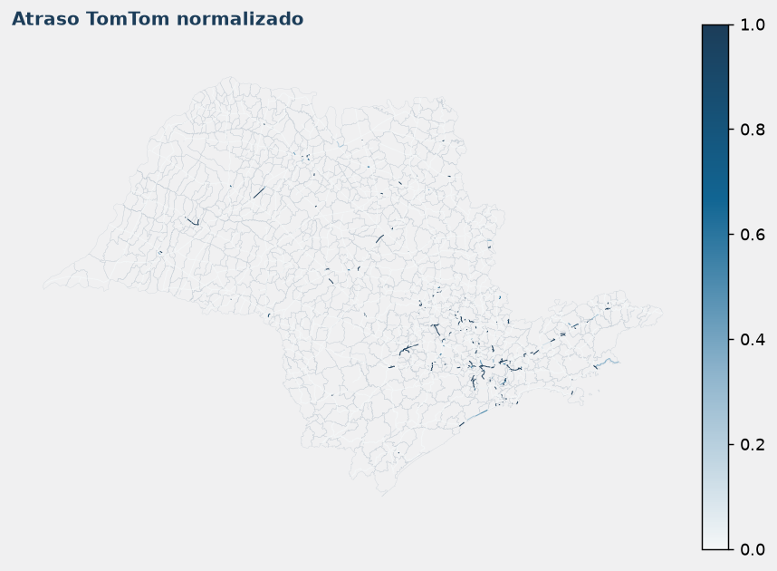
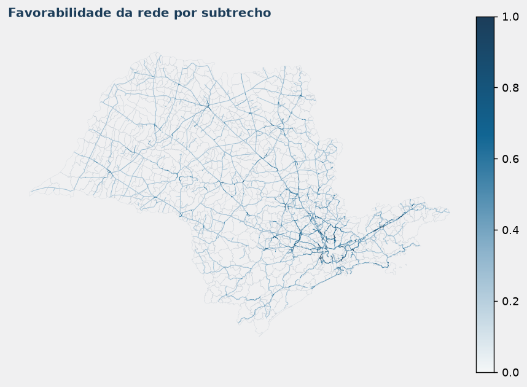
Índice de favorabilidade
A normalização é feita antes da média porque as unidades não são comparáveis: veículos/dia, V/C, fração, hab./km², percentual e quilômetro. Sem ela, o VDM determinaria a superfície. O min–máx entre p5 e p95 reduz o efeito da cauda sem inverter a ordem interna do miolo.
z(x) = clip((x − P5) / (P95 − P5), 0, 1) F_trecho = média simples dos z dos critérios retidos no subtrecho DER F_territorial = (zT1 + zT2 + zT3 + zT4) / 4
A média da rede só existe se todos os critérios retidos tiverem valor. Não se redistribui peso para critério ausente. Os pesos são iguais. Uma rodada AHP pode gerar pesos wᵢ e substituir a média simples por Σ wᵢzᵢ / Σ wᵢ, na mesma álgebra de mapas, sem recalcular as variáveis.
Colinearidade observada
| Par | Spearman |
|---|---|
| vdm_vc | 0,915 |
| relevo_v0 | -0,269 |
| densidade_renda | 0,552 |
| densidade_pib | 0,213 |
| esgoto_renda | -0,459 |
| densidade_esgoto | -0,370 |
| trabalho_densidade | 0,040 |
Limiar prévio para retirar critério redundante da média: |ρ| ≥ 0,85, quando os dois medem o mesmo fenômeno. Densidade e esgoto podem correlacionar sem serem o mesmo construto; ambos permanecem.
Resultados
A superfície de rede mostrada é a dos 6922 subtrechos do painel DER, não a média municipal. Cobertura TomTom da extensão: 95,3%. O atraso entra na média do trecho. A superfície territorial permanece municipal e não foi somada à rede.
A superfície territorial cobre os 645 municípios. A de rede cobre os subtrechos do painel DER com os quatro critérios retidos completos. As duas não foram somadas.
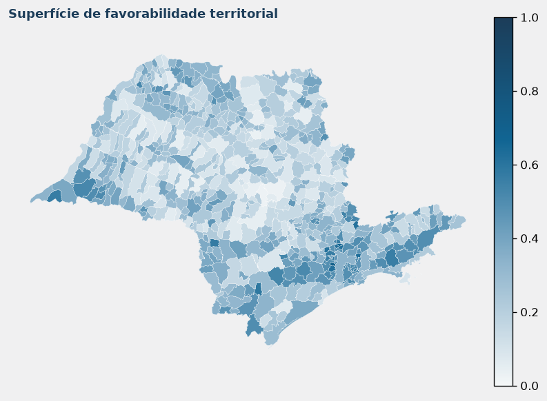
Maior favorabilidade de rede, por subtrecho
| # | Rodovia | Município | V/C | Atraso | Índice |
|---|---|---|---|---|---|
| 1 | SP 228 | Itapecerica da Serra | 1,742 | 0,034 | 1,000 |
| 2 | SP 031 | Suzano | 1,635 | 0,005 | 1,000 |
| 3 | SP 147 | Piracicaba | 1,526 | 0,008 | 1,000 |
| 4 | SP 312 | Santana de Parnaíba | 1,523 | 0,040 | 1,000 |
| 5 | SP 332 | Jundiaí | 1,427 | 0,063 | 1,000 |
| 6 | SP 075 | Itu | 1,253 | 0,083 | 1,000 |
| 7 | SP 062 | Guaratinguetá | 1,228 | 0,012 | 1,000 |
| 8 | SP 075 | Salto | 1,110 | 0,023 | 1,000 |
Maior favorabilidade territorial
| # | Município | RA | Índice |
|---|---|---|---|
| 1 | Embu das Artes | Região Metropolitana de São Paulo | 0,710 |
| 2 | Francisco Morato | Região Metropolitana de São Paulo | 0,668 |
| 3 | Itaquaquecetuba | Região Metropolitana de São Paulo | 0,635 |
| 4 | Itapecerica da Serra | Região Metropolitana de São Paulo | 0,618 |
| 5 | Franco da Rocha | Região Metropolitana de São Paulo | 0,618 |
| 6 | Vargem | RA de Campinas | 0,613 |
| 7 | Pirapora do Bom Jesus | Região Metropolitana de São Paulo | 0,610 |
| 8 | Ferraz de Vasconcelos | Região Metropolitana de São Paulo | 0,591 |
Os resultados podem ser recalculados de forma iterativa: a técnica AHP define pesos dos critérios e a aplicação usa média ponderada com álgebra de mapas. Enquanto os pesos não forem homologados, a leitura válida é a média simples acima.
Referências
- TomTom. Traffic Flow vector tiles, estilo relative, zoom 11. Coleta instantânea em 2026-10-05 11:10–11:12 BRT. traffic_level = corrente/livre; a pressão é 1 − traffic_level. Chave não publicada. Documentação: https://docs.tomtom.com/traffic-api/documentation/tomtom-maps/v1/traffic-flow/vector-flow-tiles
- DER-SP. Painel de capacidade da rede rodoviária estadual. Arquivo local
cap_rodo_painel.shp. Atributos vol_inter, v_c, v0, relevo, pavim e entorno. - IBGE. Censo Demográfico 2022, resultados do universo. Tabela 4714, população residente; características dos domicílios, tipo de esgotamento sanitário. SIDRA: https://sidra.ibge.gov.br/pesquisa/censo-demografico/demografico-2022/inicial
- IBGE. Censo Demográfico 2022, amostra. Local de exercício do trabalho principal. Campo de entrega V16000065.
- IBGE. Produto Interno Bruto dos Municípios, série revisada, 2023. PIB e PIB per capita.
- IBGE. Malha municipal, usada como geometria de espacialização em
database/geo/raw/municipio. - ANTAQ. Instalações portuárias georreferenciadas. Filtro: São Paulo e autorização não extinta, não renunciada e não cassada.
- ANAC. Aeródromos, 2021. Usados apenas os de tipo público.
- Malha ferroviária e instalações da hidrovia Tietê integrantes do bloco de acessibilidade do repositório, com geometria verificada nesta execução.
InfoSiga não entra nesta rodada. O TomTom entra só na superfície de trecho, com a cobertura medida na seção de trechos.